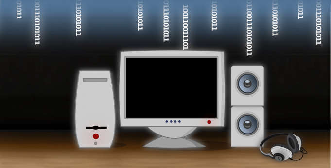

En la actualidad la incorporación de las nuevas Tecnologías de la Información y Comunicación han cambiado la manera en que muchos ámbitos, entre ellos el social, político, económico y cultural solían desarrollarse. Desde que la Globalización permitió la conectividad mundial las fronteras desaparecieron y la mayoría de las personas tuvieron que adaptarse a los nuevos modelos tecnológicos que fueron ganando terreno progresivamente.
El medio educativo no fue la excepción a esta avalancha de cambios. Las nuevas herramientas tecnológicas se convirtieron en un instrumento cada vez más indispensable en las instituciones educativas, esto debido a que facilitan el hecho de hacer presentaciones multimedia, de exposición de contenidos, material didáctico, etc..

https://siaguanta.com/c-tecnologia/informatica-educativa/